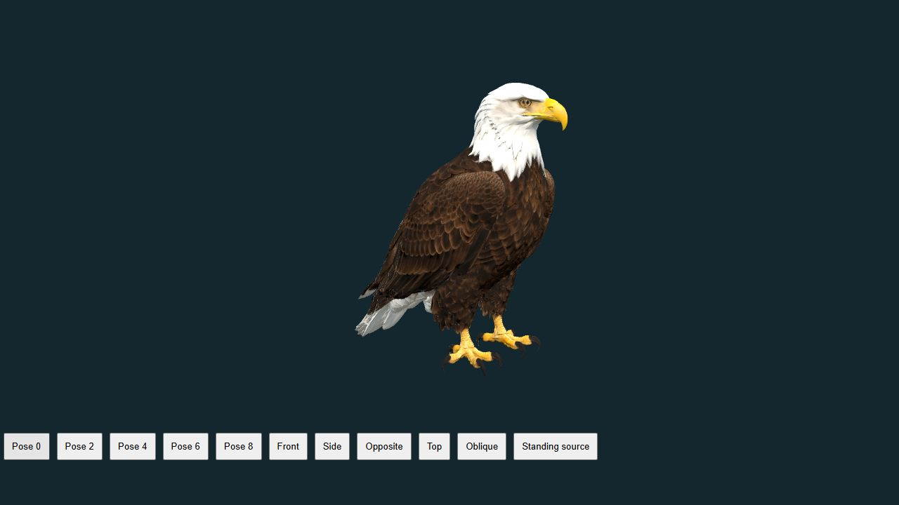
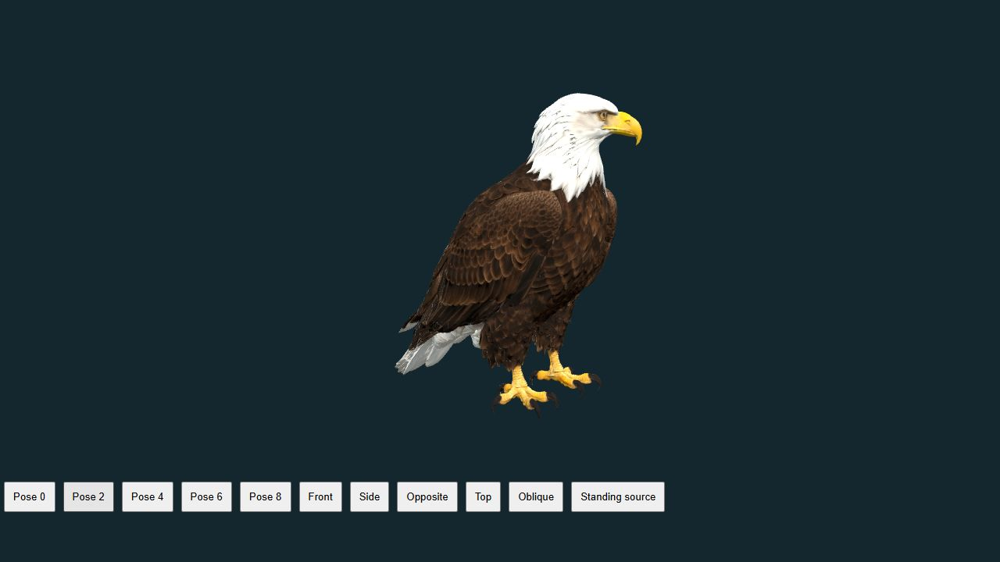
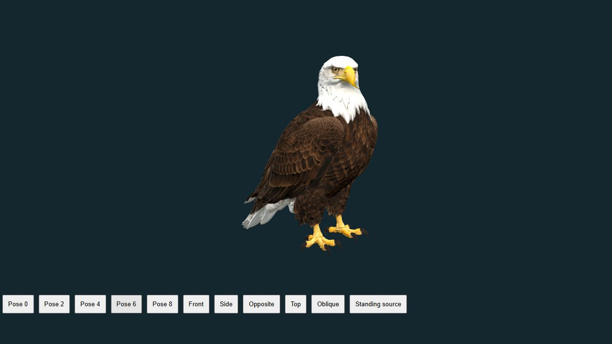

Open interactive eagle | Cheetah and earlier movement studies
Haliaeetus leucocephalus
A supported adult turns its head sideways, returns forward, turns the other way, then settles forward. The existing folded-wing exterior, feather textures and planted feet are retained. Two upper-neck controls distribute an illustrative 40-degree turn while the head surface moves together. The eight-second viewing sequence and transition curves are authored, not recorded bald-eagle movement or a universal scanning rate. This is an exterior posture study; eye movement, retinal vision, prey detection and muscle physiology are not simulated.



This release also makes the existing cheetah study timing label explicitly uncalibrated, matching its stated scientific limits and the archive schema check.
Tucker's primary study describes forward and sideways head positions during viewing, including observations of bald eagles. That pattern informs this visualization. The angles are exterior controls, not measured rotations of individual cervical vertebrae. Timing is deliberately illustrative. The study does not predict gaze, visual acuity, detection success or physiology.
The existing credited Grab3D CC0 standing surface and its texture maps are preserved, with a runtime neck/head rig. The separate Pigcraft flight exterior remains intact. There is no ground base added. Tests check original asset hash, unchanged positions/normals/UVs and triangle indices, fixed lower body/feet, rigid upper head, welded seams, camera bounds, reset, backward seeking and the finite endpoint. Sampled poses were inspected from both sides and above.
Foraging and rest remain unavailable where their mechanisms are still unimplemented. 186 unavailable processes remain across all kingdoms; this new posture study does not clear those labels.